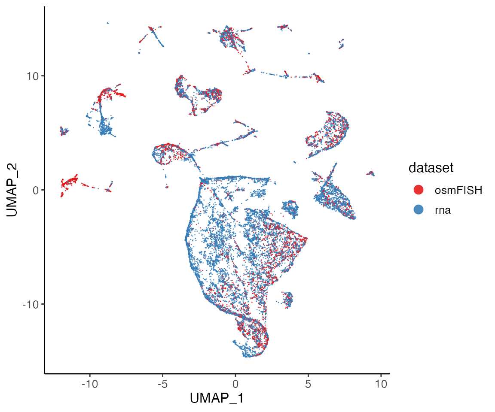
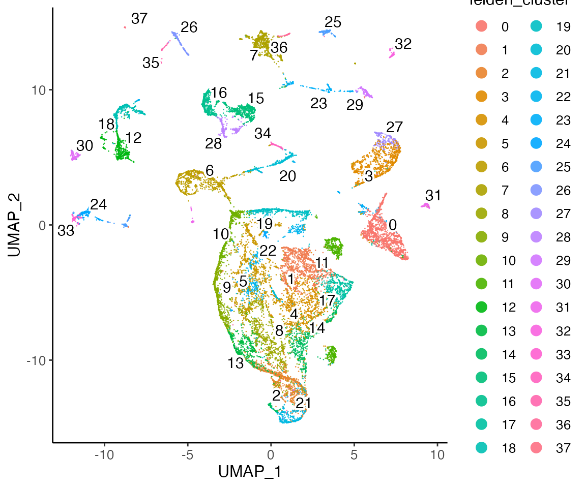

Unshared Features UINMF
Joshua Welch and April Kriebel
12/03/2021
Source:vignettes/articles/UINMF_vignette.Rmd
UINMF_vignette.RmdUnshared integrative non-negative matrix factorization (UINMF) [Kriebel and Welch, 2022] is an extensive algorithm of our original iNMF algorithm [Welch J D, 2019]. It allows integrating datasets using shared and unshared features at the same time. We demonstrated in the publication that:
- UINMF can be used to incorporate intergenic information when integrating transcriptomic and epigenomic datasets.
- UINMF can incorporate genes not measured in targeted spatial transcriptomic datasets, allowing better resolution of fine cellular subtypes within a spatial coordinate frame.
- UINMF can utilize all of the information present in single-cell multimodal datasets when integrating with single-modality datasets.
- UINMF can accommodate non-orthologous genes in cross-species integration analyses.
For this tutorial, we prepared example input data which can be found in the Dropbox folder
- osmFISH dataset
OSMFISH.vin.RDS, 33 genes by 5,219 cells, in dense matrix form, rom the mouse somatosensory cortex - A downsampled single-cell RNA-seq dataset
DROPVIZ.vin.RDS, 29,463 genes by 15,000 cells, from the frontal cortex.
Step 1: Preprocessing and Normalization
1.1 Loading the data
The prepared RDS files can be directly loaded into the R environment. They are presented in dense matrix (R default) form. We recommend converting them to sparse matrix form (“dgCMatrix” class supported by “Matrix” package) in order to reduce memory usage and speed up downstream analysis.
Next, create your Liger object, submitting the datasets in list format. The unshared features should not be subsetted out, or submitted separately. Rather, they should be included in the matrix submitted for that dataset. For example,the scRNA-seq data is submitted in its entirety, the unshared features are not submitted separately. This helps ensure proper normalization.
1.2 Preprocess the datasets
The normalization is applied to the datasets in their entirety.
lig <- normalize(lig)The normalized data for each dataset can be accessed with
normData().
Next, we select variable genes to be used for integration. To include
unshared features in your analysis, set the
useUnsharedDatasets with a vector of names of the datasets
where unshared features should be included. For instance, in this case,
we wish to include the unshared features from the RNA dataset, the
second dataset, in our analysis. We provide an individual tuning
threshold for unshared features. If a single value is submitted, that
threshold is applied to all datasets’ unshared features. If multiple
datasets include unshared features, the user can specify an individual
thresholds for each dataset by submitting a list of thresholds the same
length as the number of datasets with unshared datasets.
lig <- selectGenes(lig, useUnsharedDatasets = "rna", unsharedThresh = 0.4)## ℹ Selecting variable features for dataset "osmFISH"## ✔ ... 33 features selected out of 33 shared features.## ℹ Selecting variable features for dataset "rna"## ✔ ... 29 features selected out of 33 shared features.## ✔ ... 1327 features selected out of 24520 unshared features.## ✔ Finally 33 shared variable features are selected.The selected shared features, all 33 osmFISH genes in this case, can
be accessed with varFeatures(lig). The unshared variable
features of a specific dataset, namingly "rna" in this
case, can be accessed with
varUnsharedFeatures(lig, "rna").
We scale the selected gene expression matrix before the integration. The datasets are not centered before scaling so the non-negative constraint for the factorization is addressed.
lig <- scaleNotCenter(lig)The scaled matrix for shared features can be accessed with
scaleData(). The scaled matrix of the unshared features of
the RNA dataset is a separate matrix and can be accessed with
scaleUnsharedData(lig, "rna").
Step 2: Joint Matrix Factorization
We provide function runIntegration() for a general
wrapper of all integration method we developed. Users can do
runIntegration(..., method = "UINMF") to perform the
analysis. Alternatively, stand-alone function runUINMF() is
also provided with more specific parameter setitng guide.
lig <- runIntegration(lig, k = 30, method = "UINMF")Step 3: Quantile Normalization and Joint Clustering
3.1 Quantile normalize the factor loading
After factorization, the resulting liger object can be used in all downstream LIGER functions without adjustment. The default reference dataset for quantile normalization is the larger dataset, but the user should select the higher quality dataset as the reference dataset, even if it is the smaller dataset.
lig <- quantileNorm(lig, reference = "rna")3.2 Leiden clustering
With the quantile normalized cell factor loading, we can then apply Leiden graph-based community detection method on it.
lig <- runCluster(lig)Step 4: Visualizations and Downstream processing
4.1 Create dimension reduction embedding
lig <- runUMAP(lig)4.2 Visualize
Next, we can visualize our returned factorized object by dataset to check the alignment between datasets, as well as by cluster determined in the factorization.
plotDatasetDimRed(lig)
plotClusterDimRed(lig, legendNCol = 2)
We can also examine features such as gene expression.
pdgfra <- plotGeneDimRed(lig, "Pdgfra", splitBy = "dataset", title = names(lig))
bmp4 <- plotGeneDimRed(lig, "Bmp4", splitBy = "dataset", title = names(lig))
cowplot::plot_grid(
pdgfra$Pdgfra.rna, pdgfra$Pdgfra.osmFISH,
bmp4$Bmp4.rna, bmp4$Bmp4.osmFISH
)